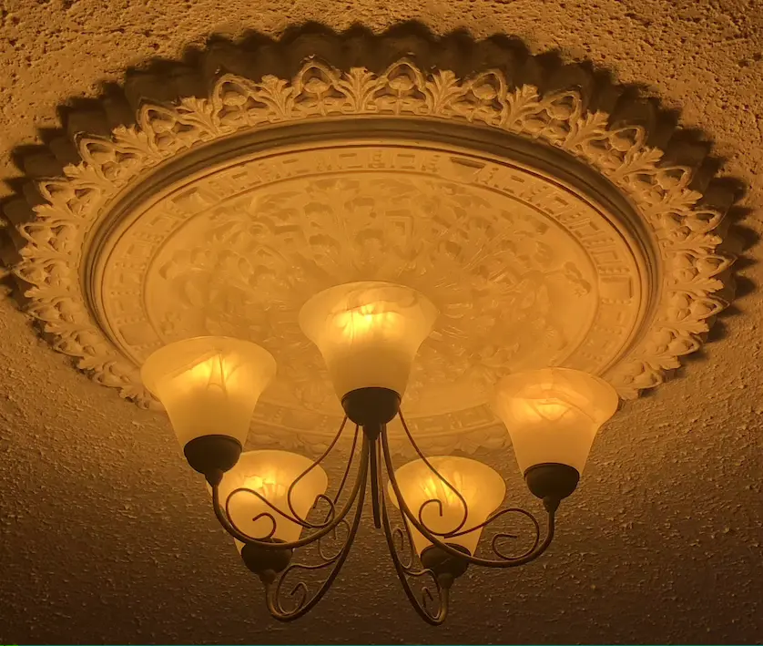
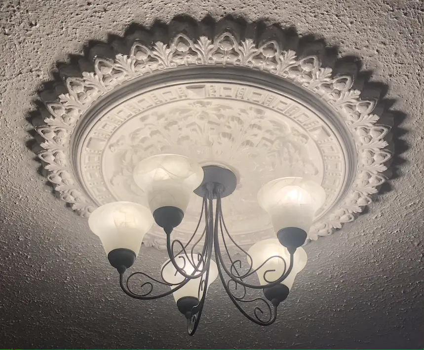

Light Bulb Swap
We had already made a switch to lower energy bulbs. They gave out a nice warm light, but they always seemed slow to react. So a tick for environmental friendliness but low marks for usability.
When given the chance to acquire some Ikea products to improve our sustainability, I looked longingly at the gadgets like the pressure cooker and portable induction hob. I wanted to improve my storage solutions, but hadn’t really decided what I wanted at that stage. And we thought that changing to Ikea’s TRÅDFRI smart lighting (opens in a new tab) would have more of an impact for the household.
The LED bulbs use up to 85% less energy and last 20 times longer than incandescent bulbs, which we’d already moved away from. Even so, there’d be savings made and other benefits besides. They’d be dimmable without the need to change wall switches or light fittings and who could resist some colour changing…
We started with enough bulbs and remote controls for two rooms to check how they suited.
We’d opted for the bulbs that could change in three stages from cold to warm light and whose brightness could be varied. So we were all set to vary the mood and brightness of our rooms depending on their use at any time…all at the flick of a switch. We no longer had to get up to flick the switch on the wall as the controller is portable.
After easily installing and loving our first set of bulbs, we’ve been adding tradfri bulbs to other rooms. The swap is nearly complete and we hope to see an impact on our electricity bill in the near future. However, I might need to introduce some motion sensors and/ or behavioural training to truly improve the situation.
Apologies but the video below isn't accessible. With hindsight, I should have added a commentary about what I was filming. Essentially I show our 5 armed chandelier light, now equipped with tradfri bulbs, being taken through the 3 different colour options and each being dimmed and brightened.